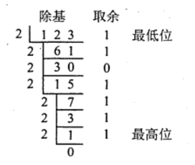
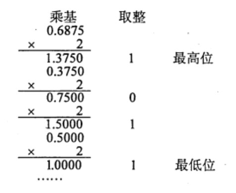
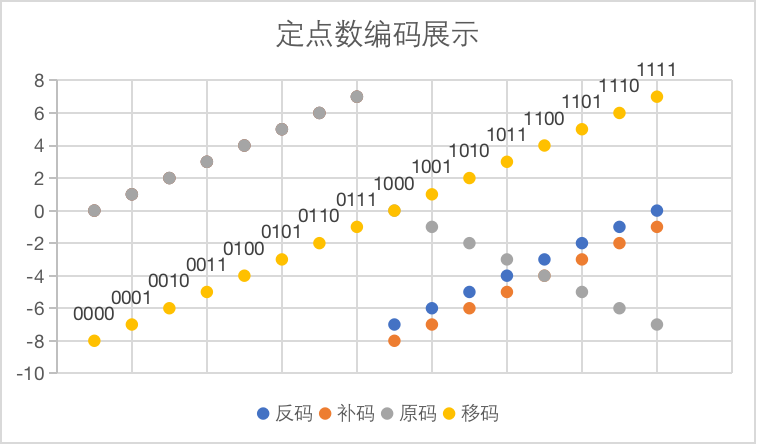

2022.08.30
Overview：
- n与十进制互转、二的倍数进制互转
- 整数部分与小数部分
n进制转十进制：$\sum_{i=1}^{k}a_i\cdot n^i$
2、8、16进制转换：可以三个，四个二进制位为一组进行转换（小数部分也同样）
十进制转n进制：
整数部分：辗转相除：$123_{10}=1111011_2$
我的理解：
- 先除出来的是经历最多2倍后剩下的，是最小的零头，所以是最低位
- 最后除法得0可以继续不停的除2，取余一直是0，在最高位才能不停补零

小数部分：乘积取余：$0.6875_{10}=0.1011_2$
我的理解：
一乘就取到整数了，说明它本来就很大，离小数点最近。

定点整数与小数
定点整数：符号位+数值+小数点
定点小数：符号位+小数点+数值
原码
符号位：零正一负
数值：本身
表示范围关于原点对称：$[-(2^n-1),2^n-1]$
我的理解：因为正零和负零都是零，导致所有表示的内容正好对半分。
反码
符号位：和原码一样，零正一负
数值：(负数)逐位取反
表示范围关于原点对称：$[-(2^n-1),2^n-1]$
我的理解：反码和原码一一对应
补码
符号位：和原码一样，零正一负
X为负数，由$X_补$求$(-X)_补$，是$X_补$连同符号位一起变反，末位加一
移码
定点整数与小数
| n+1 bit | 合法表示范围 | 最大的数 | 最小的数 | 真值0的表示 |
|---|---|---|---|---|
| 整数原码 | $[-(2^n-1),2^n-1]$ | $\begin{align}&0,11\cdots1\&=2^n-1 \end{align}$ | $\begin{align}&1,11\cdots1\&=-(2^n-1) \end{align}$ | $\begin{align}&0_+=0,000\&0_-=1,000\end{align}$ |
| 整数反码 | $[-(2^n-1),2^n-1]$ | $\begin{align}&0,11\cdots1\&=2^n-1 \end{align}$ | $\begin{align}&1,00\cdots0\&=-(2^n-1) \end{align}$ | $\begin{align}&0_+=0,000\&0_-=1,111\end{align}$ |
| 整数补码 | $[-2^n,2^n-1]$ | $\begin{align}&0,11\cdots1\&=2^n-1 \end{align}$ | $\begin{align}&1,00\cdots0\&=-2^n \end{align}$ | $\begin{align}&0_+=0,000\end{align}$ |
| 小数原码 | $[-(1-2^{-n}),1-2^{-n}]$ | $\begin{align}&0,11\cdots1\&=1-2^{-n}\end{align}$ | $\begin{align}&1,11\cdots1\&=-(1-2^{-n}) \end{align}$ | $\begin{align}&0_+=0.000\&0_-=1.000\end{align}$ |
| 小数反码 | $[-(1-2^{-n}),1-2^{-n}]$ | $\begin{align}&0,11\cdots1\&=1-2^{-n}\end{align}$ | $\begin{align}&1,10\cdots0\&=-(1-2^{-n}) \end{align}$ | $\begin{align}&0_+=0.000\&0_-=1.111\end{align}$ |
| 小数补码 | $[-1,1-2^{-n}]$ | $\begin{align}&0,11\cdots1\&=1-2^{-n}\end{align}$ | $\begin{align}&1,10\cdots0\&=-1 \end{align}$ | $\begin{align}&0_+=0.000\end{align}$ |
| 编码 | 000 | 001 | 010 | 011 | 100 | 101 | 110 | 111 |
|---|---|---|---|---|---|---|---|---|
| 原码 | +0 | +1 | +2 | +3 | -0 | -1 | -2 | -3 |
| 反码 | +0 | +1 | +2 | +3 | -3 | -2 | -1 | -0 |
| 补码 | +0 | +1 | +2 | +3 | -4 | -3 | -2 | -1 |
| 移码 | -4 | -3 | -2 | -1 | +0 | +1 | +2 | +3 |

我的理解：
一开始，人们为了简单的表示数字，只表示数字的绝对值
后来绝对值只能表示非负数，就在前边加一个1表示负号，诞生了【原码】
为了解决让加法与减法都只使用加法器，诞生了【反码】，比如
$(+1)-(+2)=(+1)+(-2)=001_反+101_反=110_反=-1$
$a_原 - b_原 = a_反 + (-b)_反$
- 但是反码仍然拥有两个0，我们把反码负数部分减一，就得到了【补码】，可以发现，补码仍然拥有反码的那些好处！而且还可以多表示一个数，可以理解成，原码的负零不需要了，就可以表示一个最小的数～
$a_原 - b_原 = a_补 + (-b)_补$
整数补码多一个$-2^n$，小数补码多一个$-1$.
变形补码，就是双符号位00是正，11是负
为了比大小方便，我们把补码的符号位取反，就诞生了【移码】，这样我们就可以通过二进制大小直接确认真值的大小了了
实际上，移码的诞生是补码加一个偏执值。本例子中，偏执值是$2^3$.
这里的偏执值是 $2^k$ ，和但IEEE754的移码的偏执值是 $2^k-1$ （普通的移码没有减1！）
8421码：有权码，结果大于9，加六修正
余3码：8421码结果加$(0011)_2$
2421码：0xxx表示0-4，1xxx表示5-9
例题
A.x1为0，其他各位任意
B.x1为1，其他各位任意
C.x1为1，x2-x5中至少有一位为1
D.x1为0，x2-x5中至少有一位为1
【答案】：C
A.x任意
B.x为正数
C.x为负数
D.以上说法都不对
【答案】：D
A,移码
B.补码
C.原码
D.无符号数
【答案】：D
【答案】：B. 存储模4补码需要一个符号位，ALU使用模4补码需要两个符号位
【答案】：D $$ \begin{align} FFFDH &= 1111,1111,1111,1101 = 1000,0000,0000,0011\ FFDFH &= 1111,1111,1101,1111 = 1000,0000,0010,0001\ 7FFCH &= 0111,1111,1111,1100 = 0111,1111,1111,1100 \end{align} $$